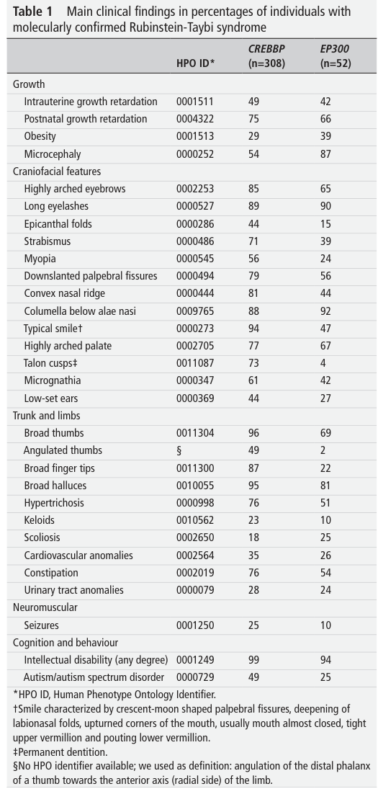

Rubinstein–Taybi Syndrome (RSTS) — Disease Characteristics Research Report
Executive summary
Rubinstein–Taybi syndrome (RSTS; also written RTS) is a rare, typically de novo, autosomal dominant neurodevelopmental disorder characterized by intellectual disability/developmental delay, distinctive facial features, distal limb anomalies (classically broad thumbs and halluces), and atypical growth. It is primarily caused by heterozygous pathogenic variants in the lysine acetyltransferase coactivators CREBBP (RSTS1) and EP300 (RSTS2), placing it among “chromatinopathies”/epigenetic disorders due to impaired chromatin regulation and histone acetylation. (lacombe2024diagnosisandmanagement pages 1-2, gils2021rubinsteintaybisyndromea pages 1-2, lacombe2024diagnosisandmanagement pages 3-4)
Recent (2023–2024) developments include (i) the first international consensus statement for diagnosis and management (2024) and (ii) human iPSC neuronal differentiation multi-omics (transcriptome + acetylome) mapping that identifies a vulnerable neurodevelopmental transition with concentrated transcriptional dysregulation (2024). (lacombe2024diagnosisandmanagement pages 1-2, gils2024transcriptomeandacetylome pages 1-2, gils2024transcriptomeandacetylome pages 3-4)
Target disease
- Disease name: Rubinstein–Taybi syndrome (RSTS/RTS)
- Category: Mendelian
- MONDO ID: Not retrieved in the available tool outputs; should be added from MONDO/OBO Foundry in downstream curation.
1. Disease information
1.1 Definition / concise overview
The 2024 international consensus describes Rubinstein–Taybi syndrome as an “archetypical genetic syndrome” characterized by “intellectual disability, well-defined facial features, distal limb anomalies and atypical growth,” among other multisystem findings, and caused by variants in CREBBP or EP300, encoding CBP and p300 with roles in transcription regulation and histone acetylation. (lacombe2024diagnosisandmanagement pages 1-2)
1.2 Key identifiers
- OMIM/MIM: RSTS1 (CREBBP): MIM 180849; RSTS2 (EP300): MIM 613684. (gils2021rubinsteintaybisyndromea pages 1-2, marchetti2024thephenotypebasedapproach pages 1-2)
- Additional identifiers (Orphanet, ICD-10/11, MeSH, MONDO) were not retrievable using the current tool calls and should be added from those databases during curation.
1.3 Synonyms / alternative names
- “Rubinstein–Taybi syndrome” / “Rubinstein-Taybi syndrome” / “RTS” / “RSTS”. (lacombe2024diagnosisandmanagement pages 1-2, gils2021rubinsteintaybisyndromea pages 1-2)
- Historical synonym noted in a review: “thumb syndrome and hallux larges” (former terminology). (gils2021rubinsteintaybisyndromea pages 1-2)
1.4 Evidence source type
The evidence summarized here comes from: - Aggregated guideline/review resources (international consensus; review articles). (lacombe2024diagnosisandmanagement pages 1-2, gils2021rubinsteintaybisyndromea pages 1-2) - Human cohorts/case series (molecular diagnostic cohorts; immunology cohort; caregiver behavioral cohort). (cross2020screeningofa pages 1-2, saettini2020prevalenceofimmunological pages 1-2, qu’d2023behavioralandneuropsychiatric pages 1-2) - Mechanistic human cellular/organoid models (patient-derived iPSCs/iNPCs/organoids; omics profiling). (thonel2022cbphsf2structuraland pages 1-2, gils2024transcriptomeandacetylome pages 1-2) - ClinicalTrials.gov registry entries. (NCT01619644 chunk 1, NCT04122742 chunk 1)
2. Etiology
2.1 Disease causal factors
Primary cause: Germline heterozygous pathogenic variants in CREBBP or EP300 (autosomal dominant), typically leading to haploinsufficiency and impaired lysine acetyltransferase (KAT/HAT) activity and transcriptional coactivation. (lacombe2024diagnosisandmanagement pages 3-4, gils2021rubinsteintaybisyndromea pages 1-2)
2.2 Risk factors
- Genetic: Pathogenic variants in CREBBP or EP300. Detection rates in clinically suspected RSTS are approximately ~55–75% for CREBBP and ~8–11% for EP300, with ~2–3% complete gene deletions and ~5–20% lacking a detectable molecular anomaly in current testing pipelines (consensus statement). (lacombe2024diagnosisandmanagement pages 3-4, lacombe2024diagnosisandmanagement pages 4-5)
- De novo predominance: The review notes that the vast majority are sporadic/de novo (reported as ~99% in the 2021 review). (gils2021rubinsteintaybisyndromea pages 1-2)
- Mosaicism: Mosaic CREBBP variants can occur and may underlie milder phenotypes; high-depth sequencing can help detect mosaic cases. (marchetti2024thephenotypebasedapproach pages 1-2, lacombe2024diagnosisandmanagement pages 5-6)
2.3 Protective factors
No protective genetic or environmental factors were identified in the retrieved evidence.
2.4 Gene–environment interactions
No specific gene–environment interactions were identified in the retrieved evidence.
3. Phenotypes
3.1 Core phenotype spectrum (with frequencies)
The 2024 consensus statement provides feature frequencies in large molecularly confirmed cohorts (CREBBP n=308; EP300 n=52) and forms the most authoritative quantitative phenotype baseline retrieved here. (lacombe2024diagnosisandmanagement pages 1-2)
Growth/development (examples): - Postnatal growth retardation: 75% (CREBBP) vs 66% (EP300). (lacombe2024diagnosisandmanagement pages 1-2) - Microcephaly: 54% vs 87%. (lacombe2024diagnosisandmanagement pages 1-2) - Intellectual disability (any degree): 99% vs 94%. (lacombe2024diagnosisandmanagement pages 2-3)
Craniofacial (examples): - Highly arched eyebrows: 85% vs 65%. (lacombe2024diagnosisandmanagement pages 1-2) - Downslanted palpebral fissures: 79% vs 56%. (lacombe2024diagnosisandmanagement pages 1-2) - Columella below alae nasi: 88% vs 92%. (lacombe2024diagnosisandmanagement pages 1-2) - Typical smile: 94% vs 47%. (lacombe2024diagnosisandmanagement pages 1-2)
Distal limbs / skeletal (examples): - Broad thumbs: 96% vs 69%. (lacombe2024diagnosisandmanagement pages 1-2) - Broad halluces: 95% vs 81%. (lacombe2024diagnosisandmanagement pages 1-2) - Angulated thumbs: 49% vs 2%. (lacombe2024diagnosisandmanagement pages 1-2)
Multisystem features (examples): - Cardiovascular anomalies: 35% vs 26%. (lacombe2024diagnosisandmanagement pages 1-2) - Urinary tract anomalies: 28% vs 24%. (lacombe2024diagnosisandmanagement pages 2-3) - Seizures: 25% vs 10%. (lacombe2024diagnosisandmanagement pages 2-3) - Autism/autism spectrum disorder: 49% vs 25%. (lacombe2024diagnosisandmanagement pages 2-3)
Visual evidence: The consensus Table 1 and Table 2 (diagnostic criteria) are captured in the extracted figure/table crops. (lacombe2024diagnosisandmanagement media d0762497, lacombe2024diagnosisandmanagement media cac74578)
3.2 Behavioral and neuropsychiatric phenotype (recent quantitative cohort)
A 2023 caregiver survey of 71 individuals aged 1–61 years reported high prevalence of behavioral and neuropsychiatric issues. (qu’d2023behavioralandneuropsychiatric pages 1-2, qu’d2023behavioralandneuropsychiatric pages 3-4)
Key statistics from the study include: - “Behavioral issues” endorsed for 88% of the sample. (qu’d2023behavioralandneuropsychiatric pages 11-13) - OCD-like symptomatology: 82% had mild-to-severe OCD-like symptoms; 21% reported an OCD diagnosis. (qu’d2023behavioralandneuropsychiatric pages 11-13) - Anxiety: 34% reported an anxiety diagnosis (despite elevated symptom measures). (qu’d2023behavioralandneuropsychiatric pages 11-13) - Genotype/type differences: RSTS2 tended to have better adaptive functioning and less stereotypic behavior, but higher social phobia than RSTS1. (qu’d2023behavioralandneuropsychiatric pages 1-2, qu’d2023behavioralandneuropsychiatric pages 8-10)
3.3 Immunologic phenotype (human cohort)
In a 2020 cohort of 97 RSTS patients, immune dysfunction and infection susceptibility were common: - Recurrent/severe infections: 72.1%. - Autoimmune/autoinflammatory complications: 12.3%. - Lymphoproliferation: 8.2%. - “Syndromic immunodeficiency”: 46.4%. - Antibody defects: 11.3%. - Interventions used in practice included immunoglobulin replacement (16.4%) and antibiotic prophylaxis (8.2%). (saettini2020prevalenceofimmunological pages 1-2)
3.4 Phenotype characteristics (age of onset; progression)
- Onset/presentation: The consensus statement notes early recognition; 86% present within the first month of life. (lacombe2024diagnosisandmanagement pages 6-7)
- Course: No robust longitudinal natural-history statistics (e.g., survival curves) were retrievable from the current evidence set; the caregiver cohort indicates adaptive skill gaps widen with age, implying increasing functional divergence over time. (qu’d2023behavioralandneuropsychiatric pages 1-2)
3.5 Quality-of-life impact
Behavioral challenges are described as a primary factor impacting quality of life in RSTS in the 2023 behavioral cohort; however, standardized QoL instruments (e.g., SF-36/EQ-5D) were not retrieved. (qu’d2023behavioralandneuropsychiatric pages 1-2)
3.6 Suggested HPO terms (non-exhaustive; based on consensus tables)
Examples directly supported by the consensus tables include: - Postnatal growth retardation HP:0004322 (lacombe2024diagnosisandmanagement pages 1-2) - Microcephaly HP:0000252 (lacombe2024diagnosisandmanagement pages 1-2) - Highly arched eyebrows HP:0002253 (lacombe2024diagnosisandmanagement pages 1-2) - Downslanted palpebral fissures HP:0000494 (lacombe2024diagnosisandmanagement pages 1-2) - Broad thumbs HP:0011304 (lacombe2024diagnosisandmanagement pages 1-2) - Broad halluces HP:0010055 (lacombe2024diagnosisandmanagement pages 2-3) - Cardiovascular anomalies HP:0002564 (lacombe2024diagnosisandmanagement pages 2-3) - Urinary tract anomalies HP:0000079 (lacombe2024diagnosisandmanagement pages 2-3) - Seizures HP:0001250 (lacombe2024diagnosisandmanagement pages 2-3) - Autism/autism spectrum disorder HP:0000729 (lacombe2024diagnosisandmanagement pages 2-3)
4. Genetic / molecular information
4.1 Causal genes
- CREBBP (CBP; located at 16p13.3) — major causal gene; RSTS1. (marchetti2024thephenotypebasedapproach pages 1-2, lacombe2024diagnosisandmanagement pages 3-4)
- EP300 (p300; located at 22q13) — RSTS2, often described as clinically milder on average. (lacombe2024diagnosisandmanagement pages 3-4, qu’d2023behavioralandneuropsychiatric pages 1-2)
4.2 Variant classes and functional consequences
- The disorder is typically attributed to heterozygous pathogenic variants or rearrangements leading to haploinsufficiency of CREBBP/EP300. (lacombe2024diagnosisandmanagement pages 3-4)
- Missense pathogenicity evidence: in a diagnostic cohort, 17/19 likely pathogenic CREBBP missense variants localized to the HAT (histone acetyltransferase) domain, and the authors concluded that missense variants in this domain can serve as “moderate evidence of pathogenicity” in variant interpretation. (cross2020screeningofa pages 1-2)
- Copy-number changes and mosaicism can contribute; mosaic CREBBP truncating variants are reported, emphasizing high-depth sequencing and multi-tissue assessment. (marchetti2024thephenotypebasedapproach pages 1-2, lacombe2024diagnosisandmanagement pages 5-6)
4.3 Modifier genes
No modifier genes were identified in the retrieved evidence.
4.4 Epigenetic information
RSTS is framed as an epigenetic disorder/chromatinopathy because CREBBP/EP300 encode lysine acetyltransferases affecting chromatin remodeling and transcriptional regulation. (gils2021rubinsteintaybisyndromea pages 1-2, lacombe2024diagnosisandmanagement pages 1-2)
5. Environmental information
No specific environmental, lifestyle, or infectious causal contributors were identified in the retrieved evidence; RSTS is primarily genetic. (lacombe2024diagnosisandmanagement pages 1-2, gils2021rubinsteintaybisyndromea pages 1-2)
6. Mechanism / pathophysiology
6.1 Core molecular mechanism (current understanding)
CBP/CREBBP and p300/EP300 are transcriptional coactivators with catalytic lysine acetyltransferase activity; loss of their function causes a deficit in acetylation (notably histone acetylation), with downstream transcriptional dysregulation during development—particularly neurodevelopment. (lacombe2024diagnosisandmanagement pages 1-2, gils2024transcriptomeandacetylome pages 1-2)
6.2 Recent omics and mechanistic advances (2024 emphasized)
(A) Transcriptome + acetylome profiling during neuronal differentiation (2024)
A 2024 Communications Biology study differentiated patient-derived iPSCs (with a recurrent CREBBP KAT-inactivating mutation) into cortical/pyramidal neurons and profiled acetylome + transcriptome across time. Major quantitative findings: - 25 specific acetylated histone residues were altered in RSTS. (gils2024transcriptomeandacetylome pages 1-2) - 2,973 differentially expressed genes (DEGs) overall, with 2,454 at day 20 (D20); D20 contained ~82.5% of all DEGs and ~75% were unique to that progenitor→immature neuron transition, identifying a critical developmental window. (gils2024transcriptomeandacetylome pages 3-4) - Specific residues frequently highlighted include H2B and H3 sites (e.g., H2BK5, H2BK43/46/108; H3K18/K23/K56/K79/K122) and others (H2AK95, H4K77). (gils2024transcriptomeandacetylome pages 6-7, gils2024transcriptomeandacetylome pages 3-4)
Suggested ontology mapping (examples): - GO biological process: neuron differentiation; neural progenitor cell differentiation; regulation of transcription, DNA-templated (supported broadly by mechanism and iPSC neuronal differentiation design). (gils2024transcriptomeandacetylome pages 1-2, gils2024transcriptomeandacetylome pages 3-4) - Cell types (CL): neural progenitor cell; cortical neuron (iPSC-derived cortical/pyramidal neurons). (gils2024transcriptomeandacetylome pages 1-2) - Anatomy (UBERON): cerebral cortex (modeled via cortical neuron differentiation/organoids). (gils2024transcriptomeandacetylome pages 1-2)
(B) CBP/EP300–HSF2–chaperone–N-cadherin cascade (2022; strong mechanistic)
A 2022 Nature Communications paper provides a mechanistic chain connecting CBP/EP300 dysfunction to neurodevelopmental phenotypes: - CBP/EP300 acetylate HSF2 (key lysines reported include K128/K135/K197) and acetylation stabilizes HSF2 by limiting proteasomal degradation. (thonel2022cbphsf2structuraland pages 2-3, thonel2022cbphsf2structuraland pages 11-11) - RSTS patient cells show reduced HSF2 and altered expression of HSF2-dependent molecular chaperones and stress response, and decreased N-cadherin–linked adhesion, which is recapitulated in patient-derived neural progenitors and cortical organoids. (thonel2022cbphsf2structuraland pages 7-9, thonel2022cbphsf2structuraland pages 15-16, thonel2022cbphsf2structuraland pages 1-2) - Rescue experiment: low, subthreshold doses of bortezomib (5–10 nM) restored HSF2 and rescued HSP110 and N-cadherin expression in cellular models, supporting causality in the pathway. (thonel2022cbphsf2structuraland pages 7-9)
Suggested ontology mapping (examples): - GO biological process: regulation of protein stability; response to heat; cell–cell adhesion. (thonel2022cbphsf2structuraland pages 7-9, thonel2022cbphsf2structuraland pages 15-16) - Cell types (CL): neural progenitor cell (iNPC); neuron (organoid neuronal layers). (thonel2022cbphsf2structuraland pages 15-16, thonel2022cbphsf2structuraland pages 3-4)
6.3 Epigenetic biomarkers: DNA methylation episignatures (clinical diagnostics)
The 2024 consensus notes that a genome-wide methylation signature can assist when molecular findings are absent. (lacombe2024diagnosisandmanagement pages 5-6)
A 2024 Human Genetics and Genomics Advances paper describes clinical deployment of EpiSign v3 (Illumina MethylationEPIC array) for NDDs. The assay compares to a large reference classifier (57 DNAm profiles representing 65 syndromes) and reports an SVM-derived “methylation variant pathogenicity (MVP)” score with secondary review above a threshold (MVP >0.01). The included table explicitly lists CREBBP and EP300 among genes with established episignatures and shows RSTS-related calls (e.g., RSTS1) alongside ACMG/AMP classifications, illustrating integration into variant interpretation workflows. (trajkova2024dnamethylationanalysis pages 2-3, trajkova2024dnamethylationanalysis pages 3-4)
7. Anatomical structures affected
RSTS is multisystem; major implicated systems include: - Nervous system / brain: neurodevelopmental delay/intellectual disability; modeled mechanisms involve cortical neuronal differentiation and neuroepithelial integrity in cortical organoids. (lacombe2024diagnosisandmanagement pages 1-2, gils2024transcriptomeandacetylome pages 1-2, thonel2022cbphsf2structuraland pages 1-2) - Craniofacial: characteristic facial gestalt (see phenotype frequencies). (lacombe2024diagnosisandmanagement pages 1-2) - Limbs: distal limb anomalies—broad/angulated thumbs and halluces. (lacombe2024diagnosisandmanagement pages 1-2) - Cardiovascular: congenital anomalies ~26–35%. (lacombe2024diagnosisandmanagement pages 2-3) - Genitourinary/urinary tract: urinary tract anomalies ~24–28%. (lacombe2024diagnosisandmanagement pages 2-3)
Suggested UBERON terms (non-exhaustive): cerebral cortex; heart; urinary system; limb. (Supported generally by organ/system-level phenotypes in consensus and organoid/cortical modeling.) (lacombe2024diagnosisandmanagement pages 2-3, gils2024transcriptomeandacetylome pages 1-2)
8. Temporal development
- Typical onset: congenital/early infancy with most presenting very early: 86% within the first month (consensus). (lacombe2024diagnosisandmanagement pages 6-7)
- Course: In the 2023 behavioral cohort, adaptive functioning deficits persist across the lifespan and the gap relative to typical peers may become more apparent at older ages. (qu’d2023behavioralandneuropsychiatric pages 1-2)
9. Inheritance and population
9.1 Epidemiology
- Incidence commonly cited as ~1/100,000–1/125,000 births in reviews and cohorts. (gils2021rubinsteintaybisyndromea pages 1-2, cross2020screeningofa pages 1-2)
9.2 Inheritance pattern
- Autosomal dominant, usually de novo. (gils2021rubinsteintaybisyndromea pages 1-2, lacombe2024diagnosisandmanagement pages 3-4)
- Recurrence risk: empirical recurrence risk for unaffected parents with one affected child ~0.5–1% (due to possible germline mosaicism); if a parent is affected, 50% transmission risk. (lacombe2024diagnosisandmanagement pages 6-7)
9.3 Penetrance/expressivity
The consensus and reviews emphasize clinical heterogeneity and incomplete molecular confirmation in some clinically typical cases; no quantitative penetrance estimate was retrieved. (lacombe2024diagnosisandmanagement pages 1-1, lacombe2024diagnosisandmanagement pages 3-4)
10. Diagnostics
10.1 Clinical criteria (2024 international consensus)
The consensus defines a weighted clinical diagnostic scoring system based on craniofacial, skeletal, growth, and development domains, with a “cardinal score” requiring ≥2 groups positive including craniofacial or skeletal. Diagnostic thresholds: - Definitive: score ≥12 + positive cardinal score. - Likely: 8–11 + positive cardinal score (warrants molecular confirmation). - Possible: 5–7 + negative cardinal score; “warrants molecular analyses of CREBBP and EP300.” (lacombe2024diagnosisandmanagement pages 1-2, lacombe2024diagnosisandmanagement pages 2-3)
10.2 Genetic testing strategy (consensus)
For individuals with suspected RSTS: - First-line targeted testing of CREBBP and EP300 via Sanger sequencing + MLPA, or high-throughput approaches (aCGH; WES/WGS depending on scenario). Variant interpretation should follow ACMG guidelines; RNA studies can clarify splicing; mosaicism can require multi-tissue testing. (lacombe2024diagnosisandmanagement pages 5-6) - A genome-wide methylation signature may support diagnosis when molecular findings are absent. (lacombe2024diagnosisandmanagement pages 5-6)
10.3 Omics-based diagnostics (episignatures)
EpiSign methylation profiling can support variant interpretation in CREBBP/EP300 cases and provide syndrome-level classification signals (e.g., RSTS1) integrated with ACMG/AMP classification. (trajkova2024dnamethylationanalysis pages 3-4)
10.4 Differential diagnosis
The consensus notes overlap with related chromatinopathies and that careful differential diagnosis is needed when specificity is reduced (e.g., overlap with Wiedemann–Steiner syndrome is mentioned). (lacombe2024diagnosisandmanagement pages 3-4)
11. Outcome / prognosis
Robust survival and life expectancy statistics were not retrievable from the tool evidence set. However, morbidity can be significant due to congenital anomalies, neurodevelopmental impairment, infections/immunodeficiency, and behavioral challenges. (saettini2020prevalenceofimmunological pages 1-2, qu’d2023behavioralandneuropsychiatric pages 1-2)
12. Treatment
12.1 Current management (evidence available)
The 2024 international consensus exists to standardize diagnostic and care practices, but the retrieved excerpts did not include the detailed baseline evaluations/surveillance schedules (noted as potentially in supplemental materials). (lacombe2024diagnosisandmanagement pages 1-2, lacombe2024diagnosisandmanagement pages 6-7)
Immunologic management in practice (cohort evidence): Immunoglobulin replacement and antibiotic prophylaxis were used in subsets of patients in the immunology cohort. (saettini2020prevalenceofimmunological pages 1-2)
12.2 Experimental / clinical trials
(A) Sodium valproate (HDAC inhibitor) trial — completed - NCT01619644 (RUBIVAL); sponsor: University Hospital Bordeaux; start year in registry entry: 2012. - Design: randomized, double-blind phase 2, sodium valproate 30 mg/kg/day vs placebo for 1 year in genetically confirmed RSTS age 6–21. - Primary endpoints: long-term memory “point location” (CMS) and “image recognition” (RBMT); responder defined as ≥1-point improvement on at least one subtest. (NCT01619644 chunk 1)
(B) Acetylome biomarker / functional assay study — ongoing - NCT04122742 (GENEPI); University Hospital Bordeaux; registry year: 2019; recruiting with estimated completion Oct 2025. - Objective: identify CBP/p300-dependent acetylation markers and regulated genes during neuronal differentiation of iPSC-derived neurons; methods include LC–MS/MS acetylome profiling, ChIP-seq, RNA-seq, and CRISPR correction of CREBBP mutations to generate isogenic controls. (NCT04122742 chunk 1, NCT04122742 chunk 2)
Suggested MAXO terms (non-exhaustive): - Histone deacetylase inhibitor therapy (sodium valproate trial) (NCT01619644 chunk 1) - Immunoglobulin replacement therapy; antibiotic prophylaxis (saettini2020prevalenceofimmunological pages 1-2)
13. Prevention
Primary prevention is generally not applicable because most cases are de novo.
Genetic counseling / reproductive options (consensus): - Prenatal testing is primarily recommended when there is a previously affected child or known familial CREBBP/EP300 pathogenic variant; invasive sampling (CVS/amniocentesis or embryonic cells with IVF) enables reliable molecular prenatal diagnosis. - Non-invasive cfDNA screening is not advocated without a known familial variant. (lacombe2024diagnosisandmanagement pages 6-7)
14. Other species / natural disease
No naturally occurring veterinary disease analogs were retrieved in the tool evidence.
15. Model organisms
15.1 Human cellular models (most directly supported)
- Patient-derived iPSCs differentiated into cortical/pyramidal neurons with paired acetylome/transcriptome profiling identified stage-specific vulnerabilities (D20 transition). (gils2024transcriptomeandacetylome pages 1-2, gils2024transcriptomeandacetylome pages 3-4)
- Patient-derived iNPCs and human cortical organoids demonstrated cell–cell adhesion and neuroepithelial integrity abnormalities linked to CBP/EP300–HSF2 cascade; rescue of molecular deficits via proteasome inhibition supports causality. (thonel2022cbphsf2structuraland pages 15-16, thonel2022cbphsf2structuraland pages 1-2)
15.2 Mouse developmental context (limited)
HSF2 acetylation and co-localization with CBP/EP300 is described in developing mouse cortex, supporting conservation of the axis in mammalian neurodevelopment, but no full mouse disease model characterization was retrieved. (thonel2022cbphsf2structuraland pages 3-4)
Knowledge-base curation table
Table (click to expand)
| Category | Key items | High-value statistics/data | Key sources |
|---|---|---|---|
| Disease identifiers | Rubinstein–Taybi syndrome (RSTS/RTS); OMIM #180849 (RSTS1, CREBBP-related), OMIM #613684 (RSTS2, EP300-related); named for Rubinstein and Taybi; chromatinopathy / epigenetic disorder | >800 publications noted by 2024 consensus; incidence generally cited as ~1:100,000–1:125,000 births | (lacombe2024diagnosisandmanagement pages 1-2, gils2021rubinsteintaybisyndromea pages 1-2) |
| Causal genes and inheritance | Autosomal dominant disorder caused mainly by heterozygous pathogenic variants in CREBBP and EP300; most cases are de novo; rare familial transmission and mosaicism reported | CREBBP explains ~55–75% of cases; EP300 ~8–11%; complete gene deletions ~2–3%; ~5–20% to ~30% remain without a molecular diagnosis depending on cohort/series; empirical recurrence risk for unaffected parents with one affected child ~0.5–1%; affected parent transmission risk 50% | (lacombe2024diagnosisandmanagement pages 3-4, gils2021rubinsteintaybisyndromea pages 1-2, lacombe2024diagnosisandmanagement pages 6-7, marchetti2024thephenotypebasedapproach pages 1-2) |
| Variant spectrum | Loss-of-function predominates; SNVs, indels, splice variants, CNVs, whole-gene deletions, rare mosaic variants; CREBBP missense clustering in HAT domain supports domain-critical pathogenicity | In a 395-referral cohort: 129 CREBBP P/LP and 16 EP300 P/LP variants; 145 molecular diagnoses (37%); 103/133 variants novel; 17/19 likely pathogenic CREBBP missense variants were in the HAT domain | (cross2020screeningofa pages 1-2, marchetti2024thephenotypebasedapproach pages 1-2, lacombe2024diagnosisandmanagement pages 5-6) |
| Core phenotype: growth and craniofacial | Characteristic face, growth disturbance, developmental delay/intellectual disability, distal limb anomalies | Molecularly confirmed cohorts (CREBBP vs EP300): postnatal growth retardation 75% vs 66%; microcephaly 54% vs 87%; highly arched eyebrows 85% vs 65%; downslanted palpebral fissures 79% vs 56%; convex nasal ridge 81% vs 44%; columella below alae nasi 88% vs 92%; typical smile 94% vs 47%; highly arched palate 77% vs 67% | (lacombe2024diagnosisandmanagement pages 1-2) |
| Core phenotype: limbs and multisystem involvement | Broad/angulated thumbs and halluces; hypertrichosis; cardiac, urinary, neurologic, GI, behavioral involvement | Broad thumbs 96% vs 69%; angulated thumbs 49% vs 2%; broad halluces 95% vs 81%; broad fingertips 87% vs 22%; hypertrichosis 76% vs 51%; cardiovascular anomalies 35% vs 26%; urinary tract anomalies 28% vs 24%; constipation 76% vs 54%; seizures 25% vs 10%; intellectual disability 99% vs 94%; autism/ASD 49% vs 25% | (lacombe2024diagnosisandmanagement pages 1-2) |
| Immunologic phenotype | Recurrent infections, antibody defects, syndromic immunodeficiency in a substantial subset; B-cell abnormalities highlighted | In 97 patients: recurrent/severe infections 72.1%; autoimmune/autoinflammatory complications 12.3%; lymphoproliferation 8.2%; syndromic immunodeficiency 46.4%; antibody defects 11.3%; immunoglobulin replacement 16.4%; antibiotic prophylaxis 8.2%; immunosuppressive therapy 9.8% | (saettini2020prevalenceofimmunological pages 1-2) |
| Behavioral / neuropsychiatric features | Anxiety, OCD-like symptoms, hyperactivity/inattention, stereotypies, challenging behavior, adaptive-function impairment across lifespan; RSTS2 tends to have milder adaptive impairment but more social phobia | Caregiver study: n=71, ages 1–61; behavioral issues 88%; OCD diagnosis 21%; anxiety diagnosis 34%; 82% had mild-to-severe OCD-like symptoms; 90% of RSTS1 vs 73% of RSTS2 had elevated OCD-like symptoms; RSTS2 had higher social phobia and better adaptive scores; school-age group showed peak challenging behaviors | (qu’d2023behavioralandneuropsychiatric pages 1-2, qu’d2023behavioralandneuropsychiatric pages 11-13, qu’d2023behavioralandneuropsychiatric pages 8-10, qu’d2023behavioralandneuropsychiatric pages 3-4) |
| Clinical diagnostic criteria | 2024 international consensus uses weighted craniofacial, skeletal, growth, and development features; cardinal score requires 2 of 4 groups positive, including skeletal or craniofacial | Definitive clinical diagnosis: score ≥12 + positive cardinal score; likely: 8–11 + positive cardinal score; possible: 5–7 + negative cardinal score; both likely and possible categories warrant CREBBP/EP300 testing | (lacombe2024diagnosisandmanagement pages 1-2, lacombe2024diagnosisandmanagement pages 3-4, lacombe2024diagnosisandmanagement pages 2-3) |
| Recommended molecular testing | If RSTS clinically suspected: first-line targeted CREBBP/EP300 testing by Sanger + MLPA or high-throughput methods; if not specifically suspected but ID/malformations present: aCGH/WES/WGS first-tier; RNA studies for splice uncertainty; mosaicism assessment across tissues; methylation/episignature can aid unresolved cases | Consensus specifically recommends CREBBP/EP300 molecular analysis for likely/possible clinical diagnoses; prenatal molecular testing mainly when familial variant/previously affected child is known | (lacombe2024diagnosisandmanagement pages 5-6, lacombe2024diagnosisandmanagement pages 6-7, lacombe2024diagnosisandmanagement pages 1-2) |
| DNA methylation / episignature diagnostics | Genome-wide methylation signatures (EpiSign) are clinically useful adjuncts for variant interpretation and unresolved neurodevelopmental cases; CREBBP and EP300 are included among genes with established episignatures | EpiSign v3 compares against 57 DNAm profiles spanning 65 syndromes; SVM-based MVP score >0.01 triggers secondary review; study table includes CREBBP/EP300 with RSTS-related diagnostic calls | (trajkova2024dnamethylationanalysis pages 2-3, trajkova2024dnamethylationanalysis pages 3-4, lacombe2024diagnosisandmanagement pages 5-6) |
| Molecular mechanism: core disease biology | CBP/CREBBP and p300/EP300 are lysine acetyltransferase (KAT/HAT) transcriptional coactivators governing histone acetylation, chromatin remodeling, and transcriptional regulation; RSTS is a chromatinopathy | Reported pathogenic variant counts in review: ~500 CREBBP and 118 EP300; HAT-domain missense enrichment is strong evidence for pathogenicity | (gils2021rubinsteintaybisyndromea pages 1-2, cross2020screeningofa pages 1-2, lacombe2024diagnosisandmanagement pages 4-5) |
| Omics mechanism: neuronal differentiation defect | iPSC-derived neuron multi-omics identified altered histone acetylation and delayed maturation during neural progenitor → immature neuron transition | 25 altered acetylated histone residues; 2,973 DEGs overall; 2,454 DEGs at D20; ~82.5% of all DEGs concentrated at D20; ~75% of all DEGs unique to D20; residues repeatedly implicated include H2BK5, H2BK11/43/46/108, H3K18, H3K23, H3K27, H3K56, H3K79, H3K122, H2AK95, H4K77 | (gils2024transcriptomeandacetylome pages 1-2, gils2024transcriptomeandacetylome pages 3-4, gils2024transcriptomeandacetylome pages 7-8, gils2024transcriptomeandacetylome pages 9-10, gils2024transcriptomeandacetylome pages 6-7) |
| Mechanistic pathway: HSF2 / stress / adhesion | CBP/EP300 acetylate and stabilize HSF2; RSTS-associated CBP/p300 dysfunction lowers HSF2, impairing chaperone/stress responses and N-cadherin–dependent neuroepithelial integrity | Key acetylated HSF2 lysines include K128, K135, K197; reduced HSF2 lowers HSP70/HSP90/HSP110-related responses and N-cadherin; low-dose bortezomib (5–10 nM) restored HSF2 and rescued HSP110/N-cadherin expression in cell models; defects reproduced in iNPCs and cortical organoids | (thonel2022cbphsf2structuraland pages 2-3, thonel2022cbphsf2structuraland pages 7-9, thonel2022cbphsf2structuraland pages 15-16, thonel2022cbphsf2structuraland pages 11-11, thonel2022cbphsf2structuraland pages 1-2) |
| Natural history / demographics | Usually congenital/early-childhood onset; many cases recognized neonatally; EP300-related disease can be milder/less typical | Consensus notes 86% present within the first month of life; equal sex distribution reported in immunology cohort summary; adults survive into later life, though morbidity depends on associated anomalies | (lacombe2024diagnosisandmanagement pages 6-7, saettini2020prevalenceofimmunological pages 1-2, wang2023geneticscornera pages 4-5) |
| Key trial / translational study: sodium valproate | NCT01619644 (RUBIVAL) phase 2 randomized, double-blind trial of oral sodium valproate vs placebo in genetically confirmed RSTS | Completed; enrolled 41; ages 6–21; sodium valproate 30 mg/kg/day for 1 year; primary endpoint was ≥1-point improvement in at least one long-term memory subtest; included imaging and histone-acetylation biomarker outcomes | (NCT01619644 chunk 1) |
| Key trial / translational study: acetylome biomarkers | NCT04122742 (GENEPI) observational Bordeaux study using patient-derived cells to define acetylation profiles as epigenetic markers for CREBBP/EP300 variant causality | Recruiting/ongoing in registry; target enrollment 154; start 2019-10-08; estimated completion Oct 2025; uses blood/skin biopsy, iPSC neuronal differentiation, LC-MS/MS acetylome profiling, ChIP-seq, RNA-seq, and CRISPR-corrected isogenic lines | (NCT04122742 chunk 1, NCT04122742 chunk 2) |
Table: This table condenses the highest-yield disease, genotype, phenotype, diagnostic, mechanistic, and clinical-trial facts for Rubinstein–Taybi syndrome using only the gathered evidence. It is designed to support rapid knowledge-base curation with direct traceability to the cited context IDs.
Notes on evidence gaps vs requested template
- MONDO, Orphanet, ICD-10/11, MeSH identifiers were not retrievable via the tool calls used in this run; they should be added from those resources during curation.
- The 2024 consensus statement includes long-term management recommendations, but in the retrieved excerpts, detailed surveillance/baseline evaluation schedules were referenced as being in supplemental materials not captured here.
- Non-human model organisms (e.g., zebrafish/Drosophila disease models) were not retrieved in the current evidence set, so this section is intentionally conservative.
Key recent/authoritative sources (with dates and URLs)
- Lacombe D, et al. “Diagnosis and management in Rubinstein–Taybi syndrome: first international consensus statement.” J Med Genet. Mar 2024. https://doi.org/10.1136/jmg-2023-109438 (lacombe2024diagnosisandmanagement pages 1-2)
- Van Gils J, et al. “Transcriptome and acetylome profiling identify crucial steps of neuronal differentiation in Rubinstein-Taybi syndrome.” Communications Biology. Oct 2024. https://doi.org/10.1038/s42003-024-06939-3 (gils2024transcriptomeandacetylome pages 1-2)
- Trajkova S, et al. “DNA methylation analysis in patients with neurodevelopmental disorders improves variant interpretation and reveals complexity.” Hum Genet Genomics Adv. Jul 2024. https://doi.org/10.1016/j.xhgg.2024.100309 (trajkova2024dnamethylationanalysis pages 2-3)
- Qu’d D, et al. “Behavioral and neuropsychiatric challenges across the lifespan in individuals with Rubinstein-Taybi syndrome.” Front Genet. Jun 2023. https://doi.org/10.3389/fgene.2023.1116919 (qu’d2023behavioralandneuropsychiatric pages 1-2)
- de Thonel A, et al. “CBP-HSF2 structural and functional interplay in Rubinstein-Taybi neurodevelopmental disorder.” Nat Commun. Nov 2022. https://doi.org/10.1038/s41467-022-34476-2 (thonel2022cbphsf2structuraland pages 1-2)
- Saettini F, et al. “Prevalence of Immunological Defects in a Cohort of 97 Rubinstein–Taybi Syndrome Patients.” J Clin Immunol. Jun 2020. https://doi.org/10.1007/s10875-020-00808-4 (saettini2020prevalenceofimmunological pages 1-2)
- Cross E, et al. “Screening of a large Rubinstein–Taybi cohort identified many novel variants and emphasizes the importance of the CREBBP histone acetyltransferase domain.” Am J Med Genet A. Aug 2020. https://doi.org/10.1002/ajmg.a.61813 (cross2020screeningofa pages 1-2)
- ClinicalTrials.gov: NCT01619644 (RUBIVAL; posted 2012). (NCT01619644 chunk 1)
- ClinicalTrials.gov: NCT04122742 (GENEPI; posted 2019). (NCT04122742 chunk 1)
References
-
(lacombe2024diagnosisandmanagement pages 1-2): Didier Lacombe, Agnès Bloch-Zupan, Cecilie Bredrup, Edward B Cooper, Sofia Douzgou Houge, Sixto García-Miñaúr, Hülya Kayserili, Lidia Larizza, Vanesa Lopez Gonzalez, Leonie A Menke, Donatella Milani, Francesco Saettini, Cathy A Stevens, Lloyd Tooke, Jill A Van der Zee, Maria M Van Genderen, Julien Van-Gils, Jane Waite, Jean-Louis Adrien, Oliver Bartsch, Pierre Bitoun, Antonia H M Bouts, Anna M Cueto-González, Elena Dominguez-Garrido, Floor A Duijkers, Patricia Fergelot, Elizabeth Halstead, Sylvia A Huisman, Camilla Meossi, Jo Mullins, Sarah M Nikkel, Chris Oliver, Elisabetta Prada, Alessandra Rei, Ilka Riddle, Cristina Rodriguez-Fonseca, Rebecca Rodríguez Pena, Janet Russell, Alicia Saba, Fernando Santos-Simarro, Brittany N Simpson, David F Smith, Markus F Stevens, Katalin Szakszon, Emmanuelle Taupiac, Nadia Totaro, Irene Valenzuena Palafoll, Daniëlle C M Van Der Kaay, Michiel P Van Wijk, Klea Vyshka, Susan Wiley, and Raoul C Hennekam. Diagnosis and management in rubinstein-taybi syndrome: first international consensus statement. Journal of Medical Genetics, 61:503-519, Mar 2024. URL: https://doi.org/10.1136/jmg-2023-109438, doi:10.1136/jmg-2023-109438. This article has 46 citations and is from a domain leading peer-reviewed journal.
-
(gils2021rubinsteintaybisyndromea pages 1-2): Julien Van Gils, Frederique Magdinier, Patricia Fergelot, and Didier Lacombe. Rubinstein-taybi syndrome: a model of epigenetic disorder. Genes, 12:968, Jun 2021. URL: https://doi.org/10.3390/genes12070968, doi:10.3390/genes12070968. This article has 111 citations.
-
(lacombe2024diagnosisandmanagement pages 3-4): Didier Lacombe, Agnès Bloch-Zupan, Cecilie Bredrup, Edward B Cooper, Sofia Douzgou Houge, Sixto García-Miñaúr, Hülya Kayserili, Lidia Larizza, Vanesa Lopez Gonzalez, Leonie A Menke, Donatella Milani, Francesco Saettini, Cathy A Stevens, Lloyd Tooke, Jill A Van der Zee, Maria M Van Genderen, Julien Van-Gils, Jane Waite, Jean-Louis Adrien, Oliver Bartsch, Pierre Bitoun, Antonia H M Bouts, Anna M Cueto-González, Elena Dominguez-Garrido, Floor A Duijkers, Patricia Fergelot, Elizabeth Halstead, Sylvia A Huisman, Camilla Meossi, Jo Mullins, Sarah M Nikkel, Chris Oliver, Elisabetta Prada, Alessandra Rei, Ilka Riddle, Cristina Rodriguez-Fonseca, Rebecca Rodríguez Pena, Janet Russell, Alicia Saba, Fernando Santos-Simarro, Brittany N Simpson, David F Smith, Markus F Stevens, Katalin Szakszon, Emmanuelle Taupiac, Nadia Totaro, Irene Valenzuena Palafoll, Daniëlle C M Van Der Kaay, Michiel P Van Wijk, Klea Vyshka, Susan Wiley, and Raoul C Hennekam. Diagnosis and management in rubinstein-taybi syndrome: first international consensus statement. Journal of Medical Genetics, 61:503-519, Mar 2024. URL: https://doi.org/10.1136/jmg-2023-109438, doi:10.1136/jmg-2023-109438. This article has 46 citations and is from a domain leading peer-reviewed journal.
-
(gils2024transcriptomeandacetylome pages 1-2): Julien Van Gils, Slim Karkar, Aurélien Barre, Seyta Ley-Ngardigal, Sophie Nothof, Stéphane Claverol, Caroline Tokarski, Jean-Philippe Trani, Raphael Chevalier, Natacha Broucqsault, Claire El Yazidi, Didier Lacombe, Patricia Fergelot, and Frédérique Magdinier. Transcriptome and acetylome profiling identify crucial steps of neuronal differentiation in rubinstein-taybi syndrome. Communications Biology, Oct 2024. URL: https://doi.org/10.1038/s42003-024-06939-3, doi:10.1038/s42003-024-06939-3. This article has 3 citations and is from a peer-reviewed journal.
-
(gils2024transcriptomeandacetylome pages 3-4): Julien Van Gils, Slim Karkar, Aurélien Barre, Seyta Ley-Ngardigal, Sophie Nothof, Stéphane Claverol, Caroline Tokarski, Jean-Philippe Trani, Raphael Chevalier, Natacha Broucqsault, Claire El Yazidi, Didier Lacombe, Patricia Fergelot, and Frédérique Magdinier. Transcriptome and acetylome profiling identify crucial steps of neuronal differentiation in rubinstein-taybi syndrome. Communications Biology, Oct 2024. URL: https://doi.org/10.1038/s42003-024-06939-3, doi:10.1038/s42003-024-06939-3. This article has 3 citations and is from a peer-reviewed journal.
-
(marchetti2024thephenotypebasedapproach pages 1-2): Giulia Bruna Marchetti, Donatella Milani, Livia Pisciotta, Laura Pezzoli, Paola Marchisio, Berardo Rinaldi, and Maria Iascone. The phenotype-based approach can solve cold cases: the paradigm of mosaic mutations of the crebbp gene. Genes, 15:654, May 2024. URL: https://doi.org/10.3390/genes15060654, doi:10.3390/genes15060654. This article has 0 citations.
-
(cross2020screeningofa pages 1-2): Esther Cross, Philippa J. Duncan‐Flavell, Rachel J. Howarth, James I. Hobbs, Nicholas Simon Thomas, and David J. Bunyan. Screening of a large rubinstein–taybi cohort identified many novel variants and emphasizes the importance of the crebbp histone acetyltransferase domain. American Journal of Medical Genetics Part A, 182:2508-2520, Aug 2020. URL: https://doi.org/10.1002/ajmg.a.61813, doi:10.1002/ajmg.a.61813. This article has 24 citations.
-
(saettini2020prevalenceofimmunological pages 1-2): Francesco Saettini, Richard Herriot, Elisabetta Prada, Mathilde Nizon, Daniele Zama, Antonio Marzollo, Igor Romaniouk, Vassilios Lougaris, Manuela Cortesi, Alessia Morreale, Rika Kosaki, Fabio Cardinale, Silvia Ricci, Elena Domínguez-Garrido, Davide Montin, Marie Vincent, Donatella Milani, Andrea Biondi, Cristina Gervasini, and Raffaele Badolato. Prevalence of immunological defects in a cohort of 97 rubinstein–taybi syndrome patients. Journal of Clinical Immunology, 40:851-860, Jun 2020. URL: https://doi.org/10.1007/s10875-020-00808-4, doi:10.1007/s10875-020-00808-4. This article has 40 citations and is from a domain leading peer-reviewed journal.
-
(qu’d2023behavioralandneuropsychiatric pages 1-2): Dima Qu’d, Lauren M. Schmitt, Amber Leston, Jacqueline R. Harris, Anne Slavotinek, Ilka Riddle, Diana S. Brightman, and Brittany N. Simpson. Behavioral and neuropsychiatric challenges across the lifespan in individuals with rubinstein-taybi syndrome. Frontiers in Genetics, Jun 2023. URL: https://doi.org/10.3389/fgene.2023.1116919, doi:10.3389/fgene.2023.1116919. This article has 6 citations and is from a peer-reviewed journal.
-
(thonel2022cbphsf2structuraland pages 1-2): Aurélie de Thonel, Johanna K. Ahlskog, Kevin Daupin, Véronique Dubreuil, Jérémy Berthelet, Carole Chaput, Geoffrey Pires, Camille Leonetti, Ryma Abane, Lluís Cordón Barris, Isabelle Leray, Anna L. Aalto, Sarah Naceri, Marine Cordonnier, Carène Benasolo, Matthieu Sanial, Agathe Duchateau, Anniina Vihervaara, Mikael C. Puustinen, Federico Miozzo, Patricia Fergelot, Élise Lebigot, Alain Verloes, Pierre Gressens, Didier Lacombe, Jessica Gobbo, Carmen Garrido, Sandy D. Westerheide, Laurent David, Michel Petitjean, Olivier Taboureau, Fernando Rodrigues-Lima, Sandrine Passemard, Délara Sabéran-Djoneidi, Laurent Nguyen, Madeline Lancaster, Lea Sistonen, and Valérie Mezger. Cbp-hsf2 structural and functional interplay in rubinstein-taybi neurodevelopmental disorder. Nature Communications, Nov 2022. URL: https://doi.org/10.1038/s41467-022-34476-2, doi:10.1038/s41467-022-34476-2. This article has 27 citations and is from a highest quality peer-reviewed journal.
-
(NCT01619644 chunk 1): Rubinstein-Taybi Syndrome: Functional Imaging and Therapeutic Trial. University Hospital, Bordeaux. 2012. ClinicalTrials.gov Identifier: NCT01619644
-
(NCT04122742 chunk 1): Diagnosis of RSTS: Identification of the Acetylation Profiles as Epigenetic Markers for Assessing Causality of CREBBP and EP300 Variants.. University Hospital, Bordeaux. 2019. ClinicalTrials.gov Identifier: NCT04122742
-
(lacombe2024diagnosisandmanagement pages 4-5): Didier Lacombe, Agnès Bloch-Zupan, Cecilie Bredrup, Edward B Cooper, Sofia Douzgou Houge, Sixto García-Miñaúr, Hülya Kayserili, Lidia Larizza, Vanesa Lopez Gonzalez, Leonie A Menke, Donatella Milani, Francesco Saettini, Cathy A Stevens, Lloyd Tooke, Jill A Van der Zee, Maria M Van Genderen, Julien Van-Gils, Jane Waite, Jean-Louis Adrien, Oliver Bartsch, Pierre Bitoun, Antonia H M Bouts, Anna M Cueto-González, Elena Dominguez-Garrido, Floor A Duijkers, Patricia Fergelot, Elizabeth Halstead, Sylvia A Huisman, Camilla Meossi, Jo Mullins, Sarah M Nikkel, Chris Oliver, Elisabetta Prada, Alessandra Rei, Ilka Riddle, Cristina Rodriguez-Fonseca, Rebecca Rodríguez Pena, Janet Russell, Alicia Saba, Fernando Santos-Simarro, Brittany N Simpson, David F Smith, Markus F Stevens, Katalin Szakszon, Emmanuelle Taupiac, Nadia Totaro, Irene Valenzuena Palafoll, Daniëlle C M Van Der Kaay, Michiel P Van Wijk, Klea Vyshka, Susan Wiley, and Raoul C Hennekam. Diagnosis and management in rubinstein-taybi syndrome: first international consensus statement. Journal of Medical Genetics, 61:503-519, Mar 2024. URL: https://doi.org/10.1136/jmg-2023-109438, doi:10.1136/jmg-2023-109438. This article has 46 citations and is from a domain leading peer-reviewed journal.
-
(lacombe2024diagnosisandmanagement pages 5-6): Didier Lacombe, Agnès Bloch-Zupan, Cecilie Bredrup, Edward B Cooper, Sofia Douzgou Houge, Sixto García-Miñaúr, Hülya Kayserili, Lidia Larizza, Vanesa Lopez Gonzalez, Leonie A Menke, Donatella Milani, Francesco Saettini, Cathy A Stevens, Lloyd Tooke, Jill A Van der Zee, Maria M Van Genderen, Julien Van-Gils, Jane Waite, Jean-Louis Adrien, Oliver Bartsch, Pierre Bitoun, Antonia H M Bouts, Anna M Cueto-González, Elena Dominguez-Garrido, Floor A Duijkers, Patricia Fergelot, Elizabeth Halstead, Sylvia A Huisman, Camilla Meossi, Jo Mullins, Sarah M Nikkel, Chris Oliver, Elisabetta Prada, Alessandra Rei, Ilka Riddle, Cristina Rodriguez-Fonseca, Rebecca Rodríguez Pena, Janet Russell, Alicia Saba, Fernando Santos-Simarro, Brittany N Simpson, David F Smith, Markus F Stevens, Katalin Szakszon, Emmanuelle Taupiac, Nadia Totaro, Irene Valenzuena Palafoll, Daniëlle C M Van Der Kaay, Michiel P Van Wijk, Klea Vyshka, Susan Wiley, and Raoul C Hennekam. Diagnosis and management in rubinstein-taybi syndrome: first international consensus statement. Journal of Medical Genetics, 61:503-519, Mar 2024. URL: https://doi.org/10.1136/jmg-2023-109438, doi:10.1136/jmg-2023-109438. This article has 46 citations and is from a domain leading peer-reviewed journal.
-
(lacombe2024diagnosisandmanagement pages 2-3): Didier Lacombe, Agnès Bloch-Zupan, Cecilie Bredrup, Edward B Cooper, Sofia Douzgou Houge, Sixto García-Miñaúr, Hülya Kayserili, Lidia Larizza, Vanesa Lopez Gonzalez, Leonie A Menke, Donatella Milani, Francesco Saettini, Cathy A Stevens, Lloyd Tooke, Jill A Van der Zee, Maria M Van Genderen, Julien Van-Gils, Jane Waite, Jean-Louis Adrien, Oliver Bartsch, Pierre Bitoun, Antonia H M Bouts, Anna M Cueto-González, Elena Dominguez-Garrido, Floor A Duijkers, Patricia Fergelot, Elizabeth Halstead, Sylvia A Huisman, Camilla Meossi, Jo Mullins, Sarah M Nikkel, Chris Oliver, Elisabetta Prada, Alessandra Rei, Ilka Riddle, Cristina Rodriguez-Fonseca, Rebecca Rodríguez Pena, Janet Russell, Alicia Saba, Fernando Santos-Simarro, Brittany N Simpson, David F Smith, Markus F Stevens, Katalin Szakszon, Emmanuelle Taupiac, Nadia Totaro, Irene Valenzuena Palafoll, Daniëlle C M Van Der Kaay, Michiel P Van Wijk, Klea Vyshka, Susan Wiley, and Raoul C Hennekam. Diagnosis and management in rubinstein-taybi syndrome: first international consensus statement. Journal of Medical Genetics, 61:503-519, Mar 2024. URL: https://doi.org/10.1136/jmg-2023-109438, doi:10.1136/jmg-2023-109438. This article has 46 citations and is from a domain leading peer-reviewed journal.
-
(lacombe2024diagnosisandmanagement media d0762497): Didier Lacombe, Agnès Bloch-Zupan, Cecilie Bredrup, Edward B Cooper, Sofia Douzgou Houge, Sixto García-Miñaúr, Hülya Kayserili, Lidia Larizza, Vanesa Lopez Gonzalez, Leonie A Menke, Donatella Milani, Francesco Saettini, Cathy A Stevens, Lloyd Tooke, Jill A Van der Zee, Maria M Van Genderen, Julien Van-Gils, Jane Waite, Jean-Louis Adrien, Oliver Bartsch, Pierre Bitoun, Antonia H M Bouts, Anna M Cueto-González, Elena Dominguez-Garrido, Floor A Duijkers, Patricia Fergelot, Elizabeth Halstead, Sylvia A Huisman, Camilla Meossi, Jo Mullins, Sarah M Nikkel, Chris Oliver, Elisabetta Prada, Alessandra Rei, Ilka Riddle, Cristina Rodriguez-Fonseca, Rebecca Rodríguez Pena, Janet Russell, Alicia Saba, Fernando Santos-Simarro, Brittany N Simpson, David F Smith, Markus F Stevens, Katalin Szakszon, Emmanuelle Taupiac, Nadia Totaro, Irene Valenzuena Palafoll, Daniëlle C M Van Der Kaay, Michiel P Van Wijk, Klea Vyshka, Susan Wiley, and Raoul C Hennekam. Diagnosis and management in rubinstein-taybi syndrome: first international consensus statement. Journal of Medical Genetics, 61:503-519, Mar 2024. URL: https://doi.org/10.1136/jmg-2023-109438, doi:10.1136/jmg-2023-109438. This article has 46 citations and is from a domain leading peer-reviewed journal.
-
(lacombe2024diagnosisandmanagement media cac74578): Didier Lacombe, Agnès Bloch-Zupan, Cecilie Bredrup, Edward B Cooper, Sofia Douzgou Houge, Sixto García-Miñaúr, Hülya Kayserili, Lidia Larizza, Vanesa Lopez Gonzalez, Leonie A Menke, Donatella Milani, Francesco Saettini, Cathy A Stevens, Lloyd Tooke, Jill A Van der Zee, Maria M Van Genderen, Julien Van-Gils, Jane Waite, Jean-Louis Adrien, Oliver Bartsch, Pierre Bitoun, Antonia H M Bouts, Anna M Cueto-González, Elena Dominguez-Garrido, Floor A Duijkers, Patricia Fergelot, Elizabeth Halstead, Sylvia A Huisman, Camilla Meossi, Jo Mullins, Sarah M Nikkel, Chris Oliver, Elisabetta Prada, Alessandra Rei, Ilka Riddle, Cristina Rodriguez-Fonseca, Rebecca Rodríguez Pena, Janet Russell, Alicia Saba, Fernando Santos-Simarro, Brittany N Simpson, David F Smith, Markus F Stevens, Katalin Szakszon, Emmanuelle Taupiac, Nadia Totaro, Irene Valenzuena Palafoll, Daniëlle C M Van Der Kaay, Michiel P Van Wijk, Klea Vyshka, Susan Wiley, and Raoul C Hennekam. Diagnosis and management in rubinstein-taybi syndrome: first international consensus statement. Journal of Medical Genetics, 61:503-519, Mar 2024. URL: https://doi.org/10.1136/jmg-2023-109438, doi:10.1136/jmg-2023-109438. This article has 46 citations and is from a domain leading peer-reviewed journal.
-
(qu’d2023behavioralandneuropsychiatric pages 3-4): Dima Qu’d, Lauren M. Schmitt, Amber Leston, Jacqueline R. Harris, Anne Slavotinek, Ilka Riddle, Diana S. Brightman, and Brittany N. Simpson. Behavioral and neuropsychiatric challenges across the lifespan in individuals with rubinstein-taybi syndrome. Frontiers in Genetics, Jun 2023. URL: https://doi.org/10.3389/fgene.2023.1116919, doi:10.3389/fgene.2023.1116919. This article has 6 citations and is from a peer-reviewed journal.
-
(qu’d2023behavioralandneuropsychiatric pages 11-13): Dima Qu’d, Lauren M. Schmitt, Amber Leston, Jacqueline R. Harris, Anne Slavotinek, Ilka Riddle, Diana S. Brightman, and Brittany N. Simpson. Behavioral and neuropsychiatric challenges across the lifespan in individuals with rubinstein-taybi syndrome. Frontiers in Genetics, Jun 2023. URL: https://doi.org/10.3389/fgene.2023.1116919, doi:10.3389/fgene.2023.1116919. This article has 6 citations and is from a peer-reviewed journal.
-
(qu’d2023behavioralandneuropsychiatric pages 8-10): Dima Qu’d, Lauren M. Schmitt, Amber Leston, Jacqueline R. Harris, Anne Slavotinek, Ilka Riddle, Diana S. Brightman, and Brittany N. Simpson. Behavioral and neuropsychiatric challenges across the lifespan in individuals with rubinstein-taybi syndrome. Frontiers in Genetics, Jun 2023. URL: https://doi.org/10.3389/fgene.2023.1116919, doi:10.3389/fgene.2023.1116919. This article has 6 citations and is from a peer-reviewed journal.
-
(lacombe2024diagnosisandmanagement pages 6-7): Didier Lacombe, Agnès Bloch-Zupan, Cecilie Bredrup, Edward B Cooper, Sofia Douzgou Houge, Sixto García-Miñaúr, Hülya Kayserili, Lidia Larizza, Vanesa Lopez Gonzalez, Leonie A Menke, Donatella Milani, Francesco Saettini, Cathy A Stevens, Lloyd Tooke, Jill A Van der Zee, Maria M Van Genderen, Julien Van-Gils, Jane Waite, Jean-Louis Adrien, Oliver Bartsch, Pierre Bitoun, Antonia H M Bouts, Anna M Cueto-González, Elena Dominguez-Garrido, Floor A Duijkers, Patricia Fergelot, Elizabeth Halstead, Sylvia A Huisman, Camilla Meossi, Jo Mullins, Sarah M Nikkel, Chris Oliver, Elisabetta Prada, Alessandra Rei, Ilka Riddle, Cristina Rodriguez-Fonseca, Rebecca Rodríguez Pena, Janet Russell, Alicia Saba, Fernando Santos-Simarro, Brittany N Simpson, David F Smith, Markus F Stevens, Katalin Szakszon, Emmanuelle Taupiac, Nadia Totaro, Irene Valenzuena Palafoll, Daniëlle C M Van Der Kaay, Michiel P Van Wijk, Klea Vyshka, Susan Wiley, and Raoul C Hennekam. Diagnosis and management in rubinstein-taybi syndrome: first international consensus statement. Journal of Medical Genetics, 61:503-519, Mar 2024. URL: https://doi.org/10.1136/jmg-2023-109438, doi:10.1136/jmg-2023-109438. This article has 46 citations and is from a domain leading peer-reviewed journal.
-
(gils2024transcriptomeandacetylome pages 6-7): Julien Van Gils, Slim Karkar, Aurélien Barre, Seyta Ley-Ngardigal, Sophie Nothof, Stéphane Claverol, Caroline Tokarski, Jean-Philippe Trani, Raphael Chevalier, Natacha Broucqsault, Claire El Yazidi, Didier Lacombe, Patricia Fergelot, and Frédérique Magdinier. Transcriptome and acetylome profiling identify crucial steps of neuronal differentiation in rubinstein-taybi syndrome. Communications Biology, Oct 2024. URL: https://doi.org/10.1038/s42003-024-06939-3, doi:10.1038/s42003-024-06939-3. This article has 3 citations and is from a peer-reviewed journal.
-
(thonel2022cbphsf2structuraland pages 2-3): Aurélie de Thonel, Johanna K. Ahlskog, Kevin Daupin, Véronique Dubreuil, Jérémy Berthelet, Carole Chaput, Geoffrey Pires, Camille Leonetti, Ryma Abane, Lluís Cordón Barris, Isabelle Leray, Anna L. Aalto, Sarah Naceri, Marine Cordonnier, Carène Benasolo, Matthieu Sanial, Agathe Duchateau, Anniina Vihervaara, Mikael C. Puustinen, Federico Miozzo, Patricia Fergelot, Élise Lebigot, Alain Verloes, Pierre Gressens, Didier Lacombe, Jessica Gobbo, Carmen Garrido, Sandy D. Westerheide, Laurent David, Michel Petitjean, Olivier Taboureau, Fernando Rodrigues-Lima, Sandrine Passemard, Délara Sabéran-Djoneidi, Laurent Nguyen, Madeline Lancaster, Lea Sistonen, and Valérie Mezger. Cbp-hsf2 structural and functional interplay in rubinstein-taybi neurodevelopmental disorder. Nature Communications, Nov 2022. URL: https://doi.org/10.1038/s41467-022-34476-2, doi:10.1038/s41467-022-34476-2. This article has 27 citations and is from a highest quality peer-reviewed journal.
-
(thonel2022cbphsf2structuraland pages 11-11): Aurélie de Thonel, Johanna K. Ahlskog, Kevin Daupin, Véronique Dubreuil, Jérémy Berthelet, Carole Chaput, Geoffrey Pires, Camille Leonetti, Ryma Abane, Lluís Cordón Barris, Isabelle Leray, Anna L. Aalto, Sarah Naceri, Marine Cordonnier, Carène Benasolo, Matthieu Sanial, Agathe Duchateau, Anniina Vihervaara, Mikael C. Puustinen, Federico Miozzo, Patricia Fergelot, Élise Lebigot, Alain Verloes, Pierre Gressens, Didier Lacombe, Jessica Gobbo, Carmen Garrido, Sandy D. Westerheide, Laurent David, Michel Petitjean, Olivier Taboureau, Fernando Rodrigues-Lima, Sandrine Passemard, Délara Sabéran-Djoneidi, Laurent Nguyen, Madeline Lancaster, Lea Sistonen, and Valérie Mezger. Cbp-hsf2 structural and functional interplay in rubinstein-taybi neurodevelopmental disorder. Nature Communications, Nov 2022. URL: https://doi.org/10.1038/s41467-022-34476-2, doi:10.1038/s41467-022-34476-2. This article has 27 citations and is from a highest quality peer-reviewed journal.
-
(thonel2022cbphsf2structuraland pages 7-9): Aurélie de Thonel, Johanna K. Ahlskog, Kevin Daupin, Véronique Dubreuil, Jérémy Berthelet, Carole Chaput, Geoffrey Pires, Camille Leonetti, Ryma Abane, Lluís Cordón Barris, Isabelle Leray, Anna L. Aalto, Sarah Naceri, Marine Cordonnier, Carène Benasolo, Matthieu Sanial, Agathe Duchateau, Anniina Vihervaara, Mikael C. Puustinen, Federico Miozzo, Patricia Fergelot, Élise Lebigot, Alain Verloes, Pierre Gressens, Didier Lacombe, Jessica Gobbo, Carmen Garrido, Sandy D. Westerheide, Laurent David, Michel Petitjean, Olivier Taboureau, Fernando Rodrigues-Lima, Sandrine Passemard, Délara Sabéran-Djoneidi, Laurent Nguyen, Madeline Lancaster, Lea Sistonen, and Valérie Mezger. Cbp-hsf2 structural and functional interplay in rubinstein-taybi neurodevelopmental disorder. Nature Communications, Nov 2022. URL: https://doi.org/10.1038/s41467-022-34476-2, doi:10.1038/s41467-022-34476-2. This article has 27 citations and is from a highest quality peer-reviewed journal.
-
(thonel2022cbphsf2structuraland pages 15-16): Aurélie de Thonel, Johanna K. Ahlskog, Kevin Daupin, Véronique Dubreuil, Jérémy Berthelet, Carole Chaput, Geoffrey Pires, Camille Leonetti, Ryma Abane, Lluís Cordón Barris, Isabelle Leray, Anna L. Aalto, Sarah Naceri, Marine Cordonnier, Carène Benasolo, Matthieu Sanial, Agathe Duchateau, Anniina Vihervaara, Mikael C. Puustinen, Federico Miozzo, Patricia Fergelot, Élise Lebigot, Alain Verloes, Pierre Gressens, Didier Lacombe, Jessica Gobbo, Carmen Garrido, Sandy D. Westerheide, Laurent David, Michel Petitjean, Olivier Taboureau, Fernando Rodrigues-Lima, Sandrine Passemard, Délara Sabéran-Djoneidi, Laurent Nguyen, Madeline Lancaster, Lea Sistonen, and Valérie Mezger. Cbp-hsf2 structural and functional interplay in rubinstein-taybi neurodevelopmental disorder. Nature Communications, Nov 2022. URL: https://doi.org/10.1038/s41467-022-34476-2, doi:10.1038/s41467-022-34476-2. This article has 27 citations and is from a highest quality peer-reviewed journal.
-
(thonel2022cbphsf2structuraland pages 3-4): Aurélie de Thonel, Johanna K. Ahlskog, Kevin Daupin, Véronique Dubreuil, Jérémy Berthelet, Carole Chaput, Geoffrey Pires, Camille Leonetti, Ryma Abane, Lluís Cordón Barris, Isabelle Leray, Anna L. Aalto, Sarah Naceri, Marine Cordonnier, Carène Benasolo, Matthieu Sanial, Agathe Duchateau, Anniina Vihervaara, Mikael C. Puustinen, Federico Miozzo, Patricia Fergelot, Élise Lebigot, Alain Verloes, Pierre Gressens, Didier Lacombe, Jessica Gobbo, Carmen Garrido, Sandy D. Westerheide, Laurent David, Michel Petitjean, Olivier Taboureau, Fernando Rodrigues-Lima, Sandrine Passemard, Délara Sabéran-Djoneidi, Laurent Nguyen, Madeline Lancaster, Lea Sistonen, and Valérie Mezger. Cbp-hsf2 structural and functional interplay in rubinstein-taybi neurodevelopmental disorder. Nature Communications, Nov 2022. URL: https://doi.org/10.1038/s41467-022-34476-2, doi:10.1038/s41467-022-34476-2. This article has 27 citations and is from a highest quality peer-reviewed journal.
-
(trajkova2024dnamethylationanalysis pages 2-3): Slavica Trajkova, Jennifer Kerkhof, Matteo Rossi Sebastiano, Lisa Pavinato, Enza Ferrero, Chiara Giovenino, Diana Carli, Eleonora Di Gregorio, Roberta Marinoni, Giorgia Mandrile, Flavia Palermo, Silvia Carestiato, Simona Cardaropoli, Verdiana Pullano, Antonina Rinninella, Elisa Giorgio, Tommaso Pippucci, Paola Dimartino, Jessica Rzasa, Kathleen Rooney, Haley McConkey, Aleksandar Petlichkovski, Barbara Pasini, Elena Sukarova-Angelovska, Christopher M. Campbell, Kay Metcalfe, Sarah Jenkinson, Siddharth Banka, Alessandro Mussa, Giovanni Battista Ferrero, Bekim Sadikovic, and Alfredo Brusco. Dna methylation analysis in patients with neurodevelopmental disorders improves variant interpretation and reveals complexity. Human Genetics and Genomics Advances, 5:100309, Jul 2024. URL: https://doi.org/10.1016/j.xhgg.2024.100309, doi:10.1016/j.xhgg.2024.100309. This article has 18 citations and is from a peer-reviewed journal.
-
(trajkova2024dnamethylationanalysis pages 3-4): Slavica Trajkova, Jennifer Kerkhof, Matteo Rossi Sebastiano, Lisa Pavinato, Enza Ferrero, Chiara Giovenino, Diana Carli, Eleonora Di Gregorio, Roberta Marinoni, Giorgia Mandrile, Flavia Palermo, Silvia Carestiato, Simona Cardaropoli, Verdiana Pullano, Antonina Rinninella, Elisa Giorgio, Tommaso Pippucci, Paola Dimartino, Jessica Rzasa, Kathleen Rooney, Haley McConkey, Aleksandar Petlichkovski, Barbara Pasini, Elena Sukarova-Angelovska, Christopher M. Campbell, Kay Metcalfe, Sarah Jenkinson, Siddharth Banka, Alessandro Mussa, Giovanni Battista Ferrero, Bekim Sadikovic, and Alfredo Brusco. Dna methylation analysis in patients with neurodevelopmental disorders improves variant interpretation and reveals complexity. Human Genetics and Genomics Advances, 5:100309, Jul 2024. URL: https://doi.org/10.1016/j.xhgg.2024.100309, doi:10.1016/j.xhgg.2024.100309. This article has 18 citations and is from a peer-reviewed journal.
-
(lacombe2024diagnosisandmanagement pages 1-1): Didier Lacombe, Agnès Bloch-Zupan, Cecilie Bredrup, Edward B Cooper, Sofia Douzgou Houge, Sixto García-Miñaúr, Hülya Kayserili, Lidia Larizza, Vanesa Lopez Gonzalez, Leonie A Menke, Donatella Milani, Francesco Saettini, Cathy A Stevens, Lloyd Tooke, Jill A Van der Zee, Maria M Van Genderen, Julien Van-Gils, Jane Waite, Jean-Louis Adrien, Oliver Bartsch, Pierre Bitoun, Antonia H M Bouts, Anna M Cueto-González, Elena Dominguez-Garrido, Floor A Duijkers, Patricia Fergelot, Elizabeth Halstead, Sylvia A Huisman, Camilla Meossi, Jo Mullins, Sarah M Nikkel, Chris Oliver, Elisabetta Prada, Alessandra Rei, Ilka Riddle, Cristina Rodriguez-Fonseca, Rebecca Rodríguez Pena, Janet Russell, Alicia Saba, Fernando Santos-Simarro, Brittany N Simpson, David F Smith, Markus F Stevens, Katalin Szakszon, Emmanuelle Taupiac, Nadia Totaro, Irene Valenzuena Palafoll, Daniëlle C M Van Der Kaay, Michiel P Van Wijk, Klea Vyshka, Susan Wiley, and Raoul C Hennekam. Diagnosis and management in rubinstein-taybi syndrome: first international consensus statement. Journal of Medical Genetics, 61:503-519, Mar 2024. URL: https://doi.org/10.1136/jmg-2023-109438, doi:10.1136/jmg-2023-109438. This article has 46 citations and is from a domain leading peer-reviewed journal.
-
(NCT04122742 chunk 2): Diagnosis of RSTS: Identification of the Acetylation Profiles as Epigenetic Markers for Assessing Causality of CREBBP and EP300 Variants.. University Hospital, Bordeaux. 2019. ClinicalTrials.gov Identifier: NCT04122742
-
(gils2024transcriptomeandacetylome pages 7-8): Julien Van Gils, Slim Karkar, Aurélien Barre, Seyta Ley-Ngardigal, Sophie Nothof, Stéphane Claverol, Caroline Tokarski, Jean-Philippe Trani, Raphael Chevalier, Natacha Broucqsault, Claire El Yazidi, Didier Lacombe, Patricia Fergelot, and Frédérique Magdinier. Transcriptome and acetylome profiling identify crucial steps of neuronal differentiation in rubinstein-taybi syndrome. Communications Biology, Oct 2024. URL: https://doi.org/10.1038/s42003-024-06939-3, doi:10.1038/s42003-024-06939-3. This article has 3 citations and is from a peer-reviewed journal.
-
(gils2024transcriptomeandacetylome pages 9-10): Julien Van Gils, Slim Karkar, Aurélien Barre, Seyta Ley-Ngardigal, Sophie Nothof, Stéphane Claverol, Caroline Tokarski, Jean-Philippe Trani, Raphael Chevalier, Natacha Broucqsault, Claire El Yazidi, Didier Lacombe, Patricia Fergelot, and Frédérique Magdinier. Transcriptome and acetylome profiling identify crucial steps of neuronal differentiation in rubinstein-taybi syndrome. Communications Biology, Oct 2024. URL: https://doi.org/10.1038/s42003-024-06939-3, doi:10.1038/s42003-024-06939-3. This article has 3 citations and is from a peer-reviewed journal.
-
(wang2023geneticscornera pages 4-5): Hua Wang and L. Ann. Genetics corner: a new case of rubinstein-taybi syndrome with a novel variant in the crebbp gene detected through whole exome sequencing. Neonatology Today, pages 165, Dec 2023. URL: https://doi.org/10.51362/neonatology.today/20231812-165170, doi:10.51362/neonatology.today/20231812-165170. This article has 0 citations.
Artifacts
- Edison artifact artifact-00
